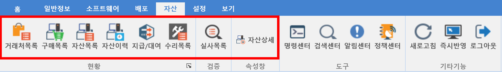

7. 자산
7. 자산
Source: https://www.sweeper.or.kr/etc/manual/7.html
7. 자산


MENU | 자산
SWeeper
기업에서 구매한 IT자산을 구매에서 폐기까지 쉽게 운영관리할 수 있으며, 지급/회수, 대여/반납을 위한 효과적인 프로세스를 제공합니다.
| THE SOFTWARE MANAGEMENT |
자산관리에 있어서 중요한 부분은 자산정보 변경에 대한 이력, 실 사용자, 상태 관리가 쉽게 이뤄질 수 있어야하며 SWeeper는 이 부분에 대하여 효율성을 극대화 할 수 있도록 개발되었습니다.

© Copyright SWeeper Inc.. All Rights Reserved